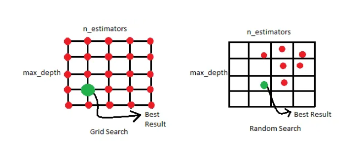
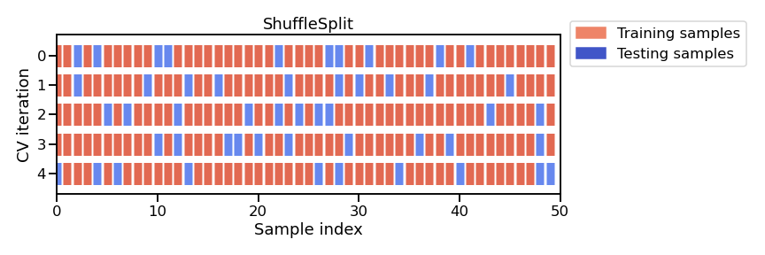

Contextualización de la Problemática#
Exploración de modelos de clasificación e implementación de calibración#
Introducción#
Se emprende un análisis exhaustivo de un problema de clasificación, comenzando con un enfoque sistemático para garantizar resultados robustos y confiables. El primer paso en este proceso es realizar un Análisis Exploratorio de Datos (EDA), que permitirá examinar la distribución de las variables en el conjunto de datos de entrenamiento. A través del EDA, se busca identificar patrones subyacentes, y cualquier irregularidad que pueda influir en el rendimiento de los modelos. Esta etapa es crucial, ya que una comprensión profunda de los datos es fundamental para tomar decisiones informadas en las siguientes fases del análisis.
Una vez extraídas las principales características del conjunto de datos, se procederá a explorar el rendimiento de cuatro modelos de clasificación de gran relevancia: Support Vector Machines (SVM), Random Forest Classifier, Gradient Boosting Trees y Regresión Logística. Cada uno de estos modelos posee sus propias fortalezas y debilidades, y el objetivo es evaluarlos en un entorno controlado para determinar cuál de ellos se adapta mejor al problema en cuestión. A través de la comparación de métricas clave como la precisión, la sensibilidad, la especificidad y el AUC-ROC, se buscará identificar el modelo que ofrezca el mejor equilibrio entre sesgo y varianza.
Además de evaluar el rendimiento base de estos modelos, un aspecto crucial del análisis será la calibración de probabilidades. La salida de un clasificador debe ser una probabilidad posteriormente calibrada para permitir el posprocesamiento (Platt, 1999). Muchos modelos de clasificación, especialmente aquellos como SVM y Gradient Boosting Trees, pueden producir predicciones de probabilidad que no están perfectamente calibradas. Esto significa que la probabilidad predicha no siempre refleja adecuadamente la verdadera probabilidad de pertenencia a una clase. Por lo tanto, se examinará si los modelos necesitan un ajuste adicional a través de técnicas de calibración, como la regresión isotónica o el método de Platt, para mejorar la precisión de las probabilidades predichas.
Finalmente, el análisis concluirá con una comparación integral de los resultados obtenidos de los modelos, tanto antes como después de la calibración de probabilidades. El objetivo es identificar el modelo que no solo tenga un alto rendimiento en términos de precisión, sino que también ofrezca predicciones de probabilidad bien calibradas. Este enfoque detallado garantizará que el modelo seleccionado no solo sea el más preciso, sino también el más fiable para la toma de decisiones en la prediccion del riesgo de deslizamiento de tierra.
Objetivos#
Desarrollar un modelo de clasificación binaria para estimar las clases de deslizamientos de tierra positivas y negativas para un conjunto de datos de entrenamiento dado, mediante diferentes técnicas para mejorar rendimientos de los modelos con el fin de tener un insumo para la calibración de las probabilidades
Estimar el método de calibración a usar, por medio de exploración de diferentes métodos que se ajusten al comportamiento del modelo para estimar la probabilidad de deslizamiento de tierra dada las calcificaciones del modelo entrenado
Desplegar mapa geográfico de la ciudad de Cali para que pueda capturar por zonas geográficas las probabilidades de deslizamiento de tierras con el fin de tener una herramienta predictiva de anticipación
Datos#
Los deslizamientos de tierra (también llamados movimientos en masa o derrumbes) son los eventos de riesgo de mayor frecuencia e impacto en el territorio de Santiago de Cali. Estas situaciones tienen diferentes detonantes como la lluvia acumulada o intensa, intervención humana y sismos. El desarrollo de un Mecanismo de Anticipación o Alerta Temprana para este tipo de fenómeno es esencial para la preparación institucional y comunitaria con el objetivo de salvar vidas y bienes en el territorio.
La alcaldía de Cali, al integrarse con empresas expertas en desarrollo tecnológico y analítica, pretende levantar este requerimiento de un modelo predictor de deslizamiento de tierras. Junto con SATIC (Sistema de Alertas Tempranas Inteligentes y Comunitarias), las oficinas gestoras de la alcaldía y la empresa donde trabajo se han empezado en el desarrollo de este modelo.
El equipo de geólogos de SATIC, cuenta con los siguientes datos que recibe de diversas fuentes y que ya tienen catalogados como eventos de “Sí deslizamiento” y eventos de “No deslizamiento” dado su tiempo enfrentando este tipo de desastres. En el siguiente mapa de ejemplo, se muestran los datos donde por latitud y longitud se ubica cada putno de evento, los puntos rojos indican Sí deslizamiento y los verdes indican No deslizamiento.
Importamos los conjuntos de datos de entrenamiento con el que contamos, los cuales pasaron por un pre-procesamiento para tenerlos listos para la analítica. Estos son provenientes de los archivos Eventos_SI_MM.csv y Eventos_NO_MM.csv proporcionados por la oficina de SATIC de la alcaldía de Cali. Estos contienen datos sobre de precipitaciones en diferentes periodos de tiempo, algunas características del suelo y la categorización binaria si hubo un derrumbe o no
A continuación, podemos ver la biblioteca de datos de las variables iniciales a tomar en cuenta con su descripción, cabe resaltar que cada una de estas features está asociada a un punto geográfico visto en la imagen anterior
Variable |
Tipo de dato |
Descripción |
|---|---|---|
Elevacion |
Numérico |
Elevación del punto de movimiento en masa en metros sobre el nivel del mar (metros) |
Pendiente |
Numérico |
Pendiente del punto de movimiento en masa en porcentaje (%) |
Zonificacion |
Categórico |
Es un nivel de riesgo: Nombre de la clasificación de amenaza o riesgo del punto de movimiento en masa asignado por geólogos de la alcaldía de Cali basado en el historial de casos de deslizamientos de tierra en la ciudad |
Tipo_geologia |
Categórico |
Nombre de la unidad geológica asociada al punto de movimiento en masa |
Cobertura_Suelo |
Categórico |
Nombre de la cobertura de suelo Metodología Land Corine Escala 1:25000 |
24h |
Numérico |
Precipitación de lluvia acumulada en 24 horas en milímetros. Este dato proviene de estaciones medidoras de lluvia a través de la ciudad |
7d |
Numérico |
Precipitación de lluvia acumulada en 7 días en milímetros. Este dato proviene de estaciones medidoras de lluvia a través de la ciudad |
10d |
Numérico |
Precipitación de lluvia acumulada en 10 días en milímetros. Este dato proviene de estaciones medidoras de lluvia a través de la ciudad |
15d |
Numérico |
Precipitación de lluvia acumulada en 15 días en milímetros. Este dato proviene de estaciones medidoras de lluvia a través de la ciudad |
30d |
Numérico |
Precipitación de lluvia acumulada en 30 días en milímetros. Este dato proviene de estaciones medidoras de lluvia a través de la ciudad |
60d |
Numérico |
Precipitación de lluvia acumulada en 60 días en milímetros. Este dato proviene de estaciones medidoras de lluvia a través de la ciudad |
90d |
Numérico |
Precipitación de lluvia acumulada en 90 días en milímetros. Este dato proviene de estaciones medidoras de lluvia a través de la ciudad |
deslizamiento |
Binario |
Indica si hubo deslizamiento de tierra en el punto de movimiento en masa (1 ó 0) |
Así se ven las primeras 5 lineas de nuestra data limpia:
ELEVACION |
PENDIENT |
zonificacion |
Nomenclatura_del_Suelo |
tipo_geologia |
24h |
7d |
10d |
15d |
30d |
60d |
90d |
deslizamientos |
|---|---|---|---|---|---|---|---|---|---|---|---|---|
1085.033813 |
36.38882065 |
Riesgo alto |
Otras superficies artificiales sin construcción |
Formacion Volcanica |
20.0 |
33.0 |
38.0 |
254.0 |
477.0 |
773.0 |
872.0 |
1 |
1027.715698 |
25.13285637 |
Amenaza baja |
Bosque mixto denso bajo de tierra firme |
Formacion Jamundi |
13.0 |
17.0 |
17.0 |
51.0 |
65.0 |
118.0 |
252.0 |
0 |
1173.279907 |
14.10933781 |
Amenaza baja |
Pasto cultivado enmalezado |
Formacion Jamundi |
0.0 |
7.2 |
21.1 |
23.1 |
128.3 |
292.7 |
599.4 |
0 |
973.211731 |
12.89175129 |
Riesgo bajo |
Zonas urbanas continuas |
Cono aluvial rio Melendez |
0.0 |
17.9 |
22.3 |
41.1 |
70.2 |
249.0 |
363.0 |
0 |
1062.026245 |
9.081903458 |
Amenaza baja |
Bosque mixto fragmentado con pastos y cultivos |
Cono aluvial 1 rio Pance |
0.0 |
48.1 |
88.6 |
163.4 |
304.6 |
533.0 |
722.6 |
0 |
1184.547241 |
27.58821106 |
Riesgo bajo |
Zonas urbanas continuas |
Formacion Volcanica |
0.0 |
0.0 |
1.0 |
47.0 |
47.0 |
99.0 |
170.0 |
0 |
Metodología#
Modelos#
Dentro de los modelos de aprendizaje automático para problemas de clasificación, se ejecutarán pruebas de rendimiento para modelos de ensamble como lo son Random Forest y XGBoost, para modelos basados en el hiperplano como el SVM (support vector machines), y modelos de regresión para clasificación como lo es la regresión logística
Bosques Aleatorios (Random Forest)
XGBoost (Extreme Gradient Boosting Trees)
Rgresión Logística
Máquinas de Vectores de Soporte (SVM)
Esquema de entrenamiento#
Ahora, la idea es lograr desarrollar una tubería de datos tal que cuando lleguen los datos nuevos a estimar, estos pasen por las mismas transformaciones por las que pasaron los datos de entrenamiento. Más precisamente hablando, pipeline en scikit-learn es una herramienta que te permite concatenar varios pasos de procesamiento de datos y modelado en un solo objeto. Esto facilita la construcción, entrenamiento y evaluación de modelos de aprendizaje automático, ya que puedes encapsular todo el flujo de trabajo en una única estructura.

De la misma manera, se busca optimizar las estimaciones y la calidad de los modelos, por lo que se usa la metodología de Grid search o búsqueda de malla para optimizar parámetros dentro de los modelos. Es una herramienta poderosa para optimizar los parámetros de un modelo de aprendizaje automático. Permite definir una cuadrícula de valores para diferentes parámetros del modelo y busca exhaustivamente la mejor combinación de estos parameros, a lo que se le llama hiperparametrizacion.
En términos más simples, el GridSearchCV realiza una búsqueda exhaustiva sobre una cuadrícula de valores especificados para los hiperparámetros de un estimador. Esto permite encontrar la combinación óptima de hiperparámetros que maximiza la precisión o cualquier otra métrica de evaluación definida.
La idea detrás del GridSearchCV es que, en lugar de ajustar manualmente los hiperparámetros del modelo y evaluar su rendimiento, el proceso se automatiza y se realiza de manera sistemática. Esto ahorra tiempo y esfuerzo, ya que el GridSearchCV evalúa todas las combinaciones posibles de los hiperparámetros dentro de la cuadrícula especificada y selecciona la mejor combinación según la métrica de evaluación especificada.

Tercero, se propone usar validación cruzada aleatoria y dividida. Esto con el proposito de no usar la clasica division unitaria de entrenamiento-pruba, ya que en este tipo de división el entrenamiento o aprendizaje puede quedar sesgado debido a que al dividir aleatoriamente no sabemos con qué proporción de los datos el modelo aprende, por ejemplo, al dividir una sola vez el conjunto de datos nos puede quedar que en el conjunto de test solo haya valores con el label de 0 (no deslizamiento en este caso) y en el entrenamiento solo existan registros del label 1 (deslizamientos), esto puede ocasionar que el modelo no aprenda de la manera más optima.
Con la validación cruzada aleatoria y dividida (shuffle-split), cada división (split) está compuesta de tanto train_size puntos (disyuntos) para el conjunto de entrenamiento y tantos test_size puntos (disjuntos) para el conjunto de prueba, se fijen inicialmente. Esta división se repite n veces, de forma aleatoria. Por ejemplo en la siguiente imagen, para la ejecución de 4 iteraciones de división de un conjunto de datos que consta de 50 puntos, con una fracción de conjunto de entrenamiento de 0.8 y una fracción de conjunto de prueba de 0.2 puntos cada uno. Esto no debe ser necesariamente igual a la fraccion completa, podemos usar un train_size de 0.5 y un test_size de 0.1, quiere decir que habrán puntos disyuntos que no tomara para entrenarse ni para testear.

Métrica de evaluación#
En el desarrollo de nuestros modelos de clasificación binaria para la identificación de zonas propensas a deslizamientos de tierra, enfrentamos una decisión crucial en la selección de la métrica de rendimiento a optimizar. La esencia de nuestra clasificación distingue dos categorías claves: la clase positiva (1), que indica la presencia de un deslizamiento de tierra, y la clase negativa (0), que señala su ausencia.

Si vemos la anterior matriz de confusión, para nuestro análisis es vital priorizar la reducción de los falsos positivos (FP - false positives), es decir, las situaciones donde el modelo predice erróneamente que habrá deslizamiento de tierra cuando en realidad no ocurre. La ocurrencia de estos errores podría tener consecuencias significativas en términos de seguridad y preparación ante desastres naturales ya que en el contexto de este problema es costoso actuar sobre un falso positivo ya que se cuenta recursos limitados para manejar casos positivos, es decir, recursos limitados para manejar desastres de deslizamientos de tierra que hay que saber administrar.
En este mismo orden de ideas, queremos entonces limitar el número de falsos positivos, por lo que entonces nos conviene maximizar la precision en la fase de entrenamiento
Precision mide cuántas de las muestras predichas como positivas son realmente positivas, es decir, precision intenta responder a la siguiente pregunta: ¿qué proporción de identificaciones positivas fue correcta?
Precision se utiliza como métrica de rendimiento cuando el objetivo es limitar el número de falsos positivos
Calibradores de probabilidad#
Por último, se busca indagar si a cada clasificador le es necesario la implementación de la calibración de probabilidades o no, la calibración de probabilidades se utiliza para ajustar las probabilidades predichas por un modelo de clasificación para que reflejen mejor las probabilidades reales observadas. En un problema de clasificación binaria, como lo es el actual, el modelo no solo estima qué clase es la más probable, sino también asgina una probabilidad asociada a dicha estimación.
Para que un clasificador probabilístico esté bien calibrado, la confianza asociada a cada predicción de clase debe reflejar la probabilidad real de que la etiqueta generada sea la correcta. Aterrizando un poco la idea, los clasificadores bien calibrados son aquellos en los que la salida del método predict_proba se puede interpretar directamente como un nivel de confianza. Por ejemplo, un clasificador bien calibrado (binario) debe clasificar las muestras de tal manera que, entre las muestras a las que asignó un valor de predict_proba cercano a, digamos 0.8, aproximadamente el 80% pertenezca efectivamente a la clase positiva, es decir, para que un clasificador probabilístico esté bien calibrado, la confianza asociada a cada predicción de clase debe reflejar la probabilidad real de que la etiqueta generada sea la correcta.
Lo vemos expresado matemáticamente de esta manera:
Esta formula indica que indica que un modelo de clasificaci√≥n está bien calibrado cuando la probabilidad predicha \( \hat{P} = p \) corresponde exactamente con la probabilidad real de que la clase predicha \( \hat{Y} \) sea correcta (es decir, igual a ùëå, la clase verdadera).
Medidas para evaluar calibración#
Calibration curves#
Existen diferentes métodos o herramientas por los cuales se puede probar si un clasificador está bien calibrado. Primero, se utilizará las “Calibration curves” o diagramas de fiabilidad, estos miden qué tan bien están calibradas las predicciones probabilísticas de un clasificador. Comparan las probabilidades predichas por un clasificador con las frecuencias observadas de los eventos reales.
En la siguiente gráfica de ejemplo, podemos ver el eje X (Mean predicted value) representa las probabilidades predichas por los modelos, va de 0 a 1, indicando la confianza con la que los modelos predicen la clase positiva. Respecto al eje Y (Fraction of positives) muestra la fracción de positivos reales, es decir, la proporción de veces que un evento predicho como probable en realidad ocurre en el conjunto de datos.
Todas las series serán comparadas con una línea que representa el caso de calibración perfecta. Si un modelo está perfectamente calibrado, los puntos de su curva se alinearán con esta diagonal, indicando que las probabilidades predichas coinciden con las frecuencias observadas de los eventos reales. Por ejemplo, una predicción de 0.6 significaría que en el 60% de los casos ese evento ocurre realmente. Entonces si nos enfocamos por ejemplo en el modelo de regresión logística (curva azul), la curva azul está bastante cerca de la línea de calibración perfecta. Esto indica que las probabilidades predichas por la regresión logística están bastante bien calibradas. Para cualquier probabilidad predicha, la fracción de positivos observados es similar, lo que significa que este modelo tiene buenas predicciones calibradas.

Brier score y Log Loss#
Por otro lado, otro método o herramienta para probar si un clasificador está bien calibrado, son los indicadores de Brier score y Log Loss. Cuando se trata de evaluar qué tan bien calibrado está un modelo, es importante utilizar métricas que cuantifiquen la calidad de las probabilidades predichas, ambas métricas penalizan las probabilidades incorrectas y ofrecen una medida de qué tan ajustadas están las probabilidades predichas con las clases reales.
El Brier Score es una métrica que mide la precisión de las probabilidades predichas por un clasificador. Evalúa cuán cercanas están las probabilidades predichas a las etiquetas verdaderas, lo que lo convierte en una herramienta útil para verificar la calibración. Se define como el error cuadrático medio entre las probabilidades predichas y las clases verdaderas. Matemáticamente, es:
Donde:
( N ) es el número de muestras.
( p_i ) es la probabilidad predicha para la muestra ( i ).
( y_i ) es la etiqueta verdadera para la muestra ( i ) (1 si es positiva y 0 si es negativa).
Interpretación:
Un Brier Score de 0 indica una predicción perfecta, donde las probabilidades predichas coinciden exactamente con las clases reales.
Un Brier Score de 1 es el peor resultado posible, ya que indica una discrepancia completa entre las probabilidades predichas y las etiquetas reales.
En general, cuanto menor sea el Brier Score, mejor calibrado estará el clasificador.
El Log Loss, también conocido como entropía cruzada, es otra métrica importante para evaluar la calibración. Mientras que el Brier Score mide el error cuadrático entre las probabilidades y las etiquetas, el Log Loss se enfoca en penalizar fuertemente las predicciones con alta confianza pero incorrectas, mientras más cercana sea la probabilidad predicha a 0 o 1 para la clase correcta, menor será el log loss. Se define como:
Donde:
( N ) es el número total de muestras.
( y_i ) es la etiqueta verdadera para la muestra ( i ), 1 para la clase positiva y 0 para la clase negativa.
( p_i ) es la probabilidad predicha de la clase positiva para la muestra ( i ).
Interpretación:
El Log Loss es siempre positivo, y cuanto menor sea, mejor calibrado está el modelo.
El Log Loss castiga fuertemente las predicciones que tienen alta confianza pero son incorrectas. Por ejemplo, si el clasificador predice una probabilidad de 0.99 para la clase positiva, pero la etiqueta real es 0, el error será considerablemente mayor que si la predicción fuera de 0.6.
Expected Calibration Error (ECE)#
Por último, el Expected Calibration Error (ECE) es una métrica utilizada para evaluar la calibración de un modelo de clasificación, especialmente en modelos de aprendizaje automático probabilístico. El ECE evalúa la diferencia promedio entre las probabilidades predichas y la frecuencia real de los eventos en una serie de intervalos (bins) de probabilidad.
Un ECE bajo indica que el modelo está bien calibrado, es decir, las probabilidades predichas son confiables. Un valor alto de ECE sugiere que el modelo es “overconfident” (predice probabilidades más altas de las correctas) o “underconfident” (predice probabilidades más bajas).
Para calcular el Expected Calibration Error (ECE), las predicciones de probabilidad se dividen en intervalos (o bins). Luego, se compara la precisión promedio de cada bin con la probabilidad promedio predicha de ese bin. La fórmula es:
donde:
( B ) es el número de intervalos.
( B_i ) es el conjunto de ejemplos en el bin ( i ).
( |B_i| ) es el número de ejemplos en el bin ( i ).
( n ) es el total de ejemplos.
( acc(B_i) ) es la precisión de los ejemplos en el bin ( i ).
( conf(B_i) ) es la confianza promedio (o probabilidad promedio predicha) en el bin ( i ).
Se expresa entre 0 y 1 y se podría interpretar de esta manera:
ECE entre 0 y 0.1 (0% a 10%): Generalmente se considera que el modelo está bien calibrado. Las predicciones de probabilidad son bastante confiables.
ECE entre 0.1 y 0.3 (10% a 30%): El modelo tiene una calibración moderada. Puede ser necesario ajustar el modelo o aplicar técnicas de calibración.
ECE por encima de 0.3 (30%): Se considera una mala calibración. Las probabilidades predichas no reflejan adecuadamente las verdaderas frecuencias de las clases, y el modelo puede requerir una reevaluación o recalibración significativa.
Estos serán los métodos que se utilizarán en este proyecto para saber si un modelo de clasificación está bien calibrado o no.
Métodos de Calibración#
Una vez validadas las métricas previamente descritas, de acuerdo a estas se determinará si el modelo requiere calibración. En caso de ser así, se aplicarán métodos de calibración en el post-procesamiento, lo cual significa que se ajusta un modelo de calibración a las salidas de un clasificador ya entrenado con el fin de mejorar la distribucion de las probabilidades de la clase positiva, esto es, la confianza de sus probabilidades. Estos métodos son ventajosos porque implican un menor costo computacional en comparación con los métodos de calibración aplicados durante el entrenamiento. Además, son independientes del modelo entrenado y de la complejidad del problema, ya que solo requieren las predicciones del modelo y la distribución real de etiquetas.
Estos métodos requieren utilizar las puntuaciones del clasificador entrenado junto con el conjunto de datos de calibración. Por puntuaciones se entiende que estas indican la confianza en sus predicciones de arroja cada clasificador, pero estas puntuaciones no necesariamente se interpretan como probabilidades válidas para interpretar (por ejemplo, en un SVM, estas puntuaciones pueden ser la distancia al hiperplano de decisión).
El objetivo de estos métodos es estimar o calibrar la probabilidad de la clase positiva (etiquetada en este caso como 1) a partir de las puntuaciones del clasificador entrenado y un conjunto de datos etiquetados que contenga ejemplos para calibrar las salidas del modelo (conjunto de datos de calibración) por medio de diferentes técnicas, como las siguientes que usaremos en este estudio:
Platt Scaling (Ajuste Sigmoidal o Logístico)
Platt (1999) propone un método para calibrar las probabilidades de salida de un clasificador, especialmente aquellos que producen puntuaciones no calibradas, como los modelos de SVM. Este método ajusta las probabilidades de predicción de un modelo ya entrenado (puntuaciones) mediante la utilización de una regresión logística haciendo uso de una función sigmoidal.
El modelo de regresión logística es una forma de modelar la relación entre las puntuaciones del clasificador y la probabilidad de que una observación pertenezca a la clase positiva. La forma funcional de la regresión logística es:
donde:
\(\sigma(z) = \frac{1}{1 + e^{-z}}\) es la función sigmoide
\(x\) son las puntuaciones del clasificador
\(A\) y \(B\) son los parámetros que se ajustan a partir de los datos.
Para hacer el ajuste de las puntuaciones del modelo y convertirlas en probabilidades calibradas, se utilizan las puntuaciones del clasificador como las variables independientes \(x\) y las etiquetas reales del conjunto de calibración (0 o 1) como las variables dependiente \(y\). El objetivo es encontrar los mejores parámetros \(A\) y \(B\) que minimicen la discrepancia entre las probabilidades predichas por el modelo de regresión logística y las verdaderas etiquetas de clase. La función de costo comúnmente utilizada es la log-verosimilitud, que se maximiza durante el entrenamiento de la regresión logística.
La idea es que este proceso asegure que el modelo de regresión logística capte la relación entre las puntuaciones del clasificador y la probabilidad real de las clases.
Calibración Beta
Kull et al. (2017) proponen un método para calibrar las probabilidades de salida de un clasificador basado en la distribución beta, especialmente útil para clasificadores cuyos puntajes no están calibrados, como Naive Bayes, Adaboost (Boosted Trees) o SVM. Este método ajusta las probabilidades de predicción mediante una familia paramétrica más rica que la calibración logística, capturando patrones no lineales o asimétricos en las distribuciones de puntajes.
La calibración beta utiliza la siguiente función para modelar la relación entre los puntajes de salida s y las probabilidades calibradas:
Donde a, b ≥0 : son los parámetros de forma y c controla el desplazamiento (pendiente)
Esta función se basa en el cociente de dos distribuciones beta, lo que permite ajustar probabilidades dentro del rango [0, 1]. El ajuste de a, b y c se realiza minimizando la pérdida logarítmica (log-loss) mediante métodos de optimización basados en gradientes.
Para ajustar las probabilidades del modelo, se toman los puntajes del clasificador s como entrada, los parámetros a, b y c se optimizan utilizando un conjunto de datos de calibración con etiquetas reales y , por último, se asegura que la función sea monótona, corrigiendo cualquier parámetro negativo si fuera necesario.
Note
Posible Redundancia
Para la implementación del modelo regresión logística, este suele producir probabilidades calibradas de manera natural, ya que está diseñado para ajustar una probabilidad de pertenencia a la clase positiva basada en los datos de entrenamiento. La salida de un modelo de regresión logística ya se interpreta de por si como una probabilidad entre 0 y 1, ya que el modelo aplica una transformación sigmoide a su salida lineal.
Sin embargo, en algunos casos, es posible que las probabilidades de un modelo de regresión logística no estén perfectamente calibradas. Esto puede suceder si:
Los datos están desbalanceados: Si tienes clases con distribuciones muy desiguales, la regresión logística puede producir probabilidades que no reflejan fielmente la distribución real de clases.
El modelo está regularizado: En algunos casos, el uso de regularización (como Ridge o Lasso) puede sesgar un poco las probabilidades, especialmente si la regularización es fuerte.
Distribución de datos en validación diferente a la de entrenamiento: Si la distribución de los datos en el conjunto de validación o prueba es distinta a la de entrenamiento, las probabilidades pueden perder calibración.
Para verificar la calibración de la salida de un modelo de regresión logística, se evaluaran las métricas de calibración mencionadas anteriormente y se tomarán las decisiones pertinentes
Tabla de contenidos#
- Análisis Exploratorio de datos
- Implementación 1: Modelo RandomForest
- Implementación 2: Gradient Boosted Trees
- Implementación 3: Modelo Logistic Regression
- Implementación 4: Modelo Support Vector Machines
- Calibración de clasificadores
- Datos de estaciones en linea- Precipitaciones de lluvia acumulada